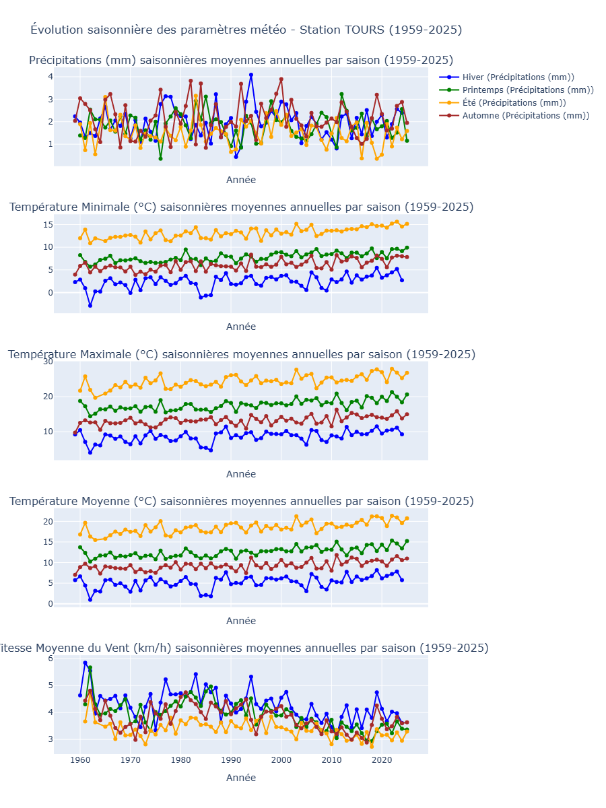
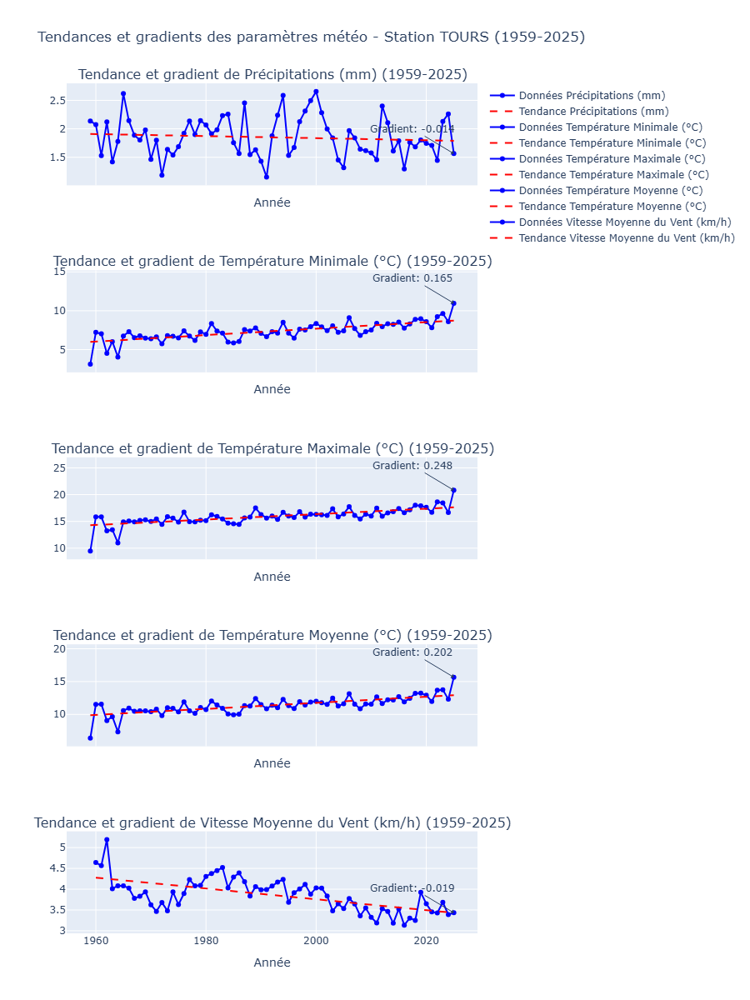

Contexte
Cette analyse présente l’évolution des températures, précipitations et autres paramètres climatiques observés à Tours à partir de données historiques recueillies sur plusieurs décennies.
Résultats principaux
Les tendances montrent une augmentation moyenne des températures et une variation saisonnière notable des précipitations, avec des impacts potentiels sur l’environnement local et l’agriculture.
Visualisations

Figure 1 : Évolution du climat à Tours entre 1959 et 2025.

Figure 2 : Tendance et gradient de variation pour chaque paramètre climatique.